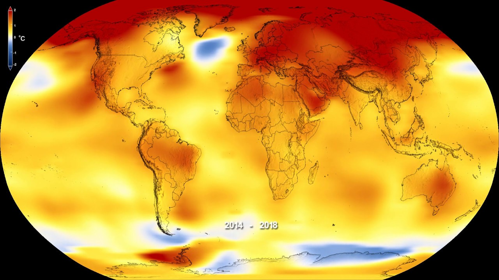

Many impacts of climate change have already been recognized which include extreme weather events, glacier retreats, changes in the timing of seasons, changes in farming productivity, the rise of the sea level, and Arctic sea ice declines.
What causes Global Warming?
Global warming is caused by CO2 and other greenhouse gases that collect in the atmosphere and absorb UV and solar radiation. Naturally, this radiation would escape into space, but greenhouse trap the radiation and cause the planet to get warmer, globally.
Some goals we can set to reduce Global Warming:
Change a light
Drive less
Recycle more
Check your tires
Use less hot water
Avoid products with a lot of packaging
Adjust your thermostat
Plant a tree
What are the effects of Global Warming?
Melting glaciers, early snowmelt, and severe drought
Rising sea levels
Forests, farms, and cities will face troublesome new pests, heat waves, heavy downpours, and increased flooding
Disruption of habitats such as coral reefs and Alpine meadows could drive many plant and animal species to extinction
Allergies, asthma, and infectious disease outbreaks will become more common
Humans and animals alike will face new difficulties for survival because of global warming. More frequent and intense drought, extreme storms, heat waves, sea levels rising, glaciers melting, and oceans warming can directly harm animals, destroy their habitats, and wreak havoc on human communities. As this gets wors, these impacts will have a higher likelihood to occur.
Protecting the Forests
Forests protect the Earth by absorbing carbon dioxide which is a major source of pollution that causes climate change and turns it into oxygen. To help decrease global warming we can:
Examine the vulnerability of forests to global warming and search for ways to help them adapt to the changes
Make use of satellite images and aerial mapping technologies to trace illegal lumbering
Reduce forest destruction and degradation and protect wildlife
The Animal Kingdom
The main impact of global warming on the animal kingdom is habitat disruption in which ecosystems rapidly change as a response to climate change. Habitat disruptions often occur due to changes in temperature and water availability, which affect vegetation and therefore the all animal's diet. The animal species impacted the most by global warming include reindeer, arctic foxes, polar bears, penguins, gray wolves, and salmon.
